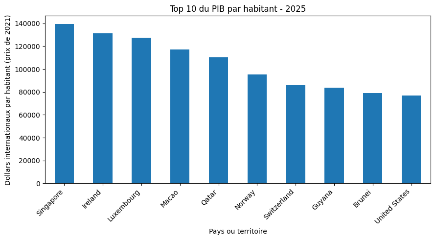
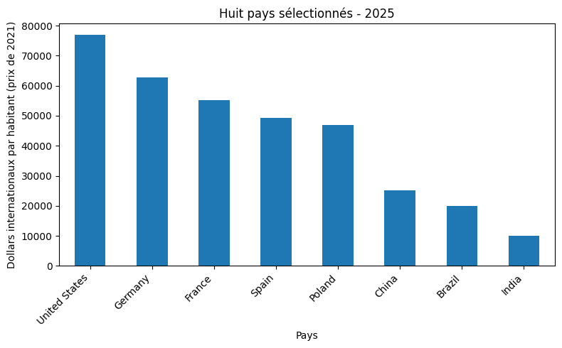
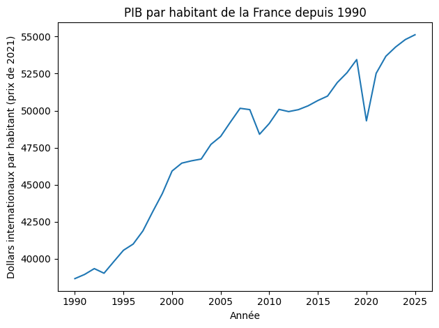

Corrigé TD5
Mini-projet pandas avec Our World in Data
Essayez chaque exercice, puis ouvrez sa solution. Les exercices se suivent dans l’ordre.
Sommaire des exercices
Exercice 1 — Préparer le script
Objectif. Créer le dossier de sortie du mini-projet.
Afficher la solution : exercice 1
Démarche de résolution
Enregistrer le fichier dans le dossier TD5, ouvrir ce dossier dans VS Code, puis y lancer Python. exist_ok=True permet de réexécuter sans erreur si out existe déjà.
Code Python commenté
from pathlib import Path
out_dir = Path("out")
out_dir.mkdir(exist_ok=True)
Résultat et interprétation
Un dossier out existe dans le dossier courant. Les images et tableaux y seront enregistrés.
Exercice 2 — Vérifier le dossier courant
Objectif. Vérifier le dossier courant.
Afficher la solution : exercice 2
Démarche de résolution
Afficher le lieu depuis lequel Python travaille, qui peut être différent du dossier où le script est enregistré.
Code Python commenté
print("Dossier courant :", Path.cwd())
print("Le dossier out existe :", out_dir.exists())
# Ces affichages de diagnostic peuvent être retirés après vérification.
Résultat et interprétation
Le premier chemin dépend de votre ordinateur ; le second affichage doit être True. Aucun chemin personnel n’est nécessaire dans le code.
Sortie de l’exécution de référence :
Dossier courant : <dossier TD5 de cette exécution>
Le dossier out existe : True
Exercice 3 — Lire le CSV OWID
Objectif. Lire et inspecter le CSV OWID.
Afficher la solution : exercice 3
Démarche de résolution
L’énoncé propose la lecture distante et autorise la lecture locale. La ligne distante est indiquée ci-dessous ; le corrigé exécute la copie du dépôt pour garantir les mêmes résultats hors connexion. Pour un essai en ligne, remplacer la ligne locale par la ligne commentée.
Code Python commenté
import pandas as pd
url = "https://ourworldindata.org/grapher/gdp-per-capita-worldbank.csv"
# Version en ligne de l'énoncé : df = pd.read_csv(url)
df = pd.read_csv("data/gdp-per-capita-worldbank.csv")
print(df.head())
print(df.shape)
print(df.columns)
# Copie locale fournie : 7445 lignes et 5 colonnes.
Résultat et interprétation
La copie locale contient 7445 lignes et 5 colonnes. head affiche les cinq premières lignes ; shape donne (lignes, colonnes). Le fichier distant peut avoir d’autres dimensions.
Sortie de l’exécution de référence :
Entity Code Year GDP per capita World region according to OWID
0 Afghanistan AFG 2000 1617.8264 Asia
1 Afghanistan AFG 2001 1454.1108 Asia
2 Afghanistan AFG 2002 1774.3087 Asia
3 Afghanistan AFG 2003 1815.9282 Asia
4 Afghanistan AFG 2004 1776.9182 Asia
(7445, 5)
Index(['Entity', 'Code', 'Year', 'GDP per capita',
'World region according to OWID'],
dtype='object')
Exercice 4 — Repérer la colonne de l'indicateur
Objectif. Identifier la colonne numérique du PIB.
Afficher la solution : exercice 4
Démarche de résolution
Lire les noms avant de sélectionner la colonne. La dernière colonne du fichier local contient une région, et non le PIB.
Code Python commenté
print(list(df.columns))
print("Dernière colonne :", df.columns[-1])
# Le PIB de la copie fournie est dans "GDP per capita".
value_col = "GDP per capita"
print("Colonne du PIB :", value_col)
print("Type de cette colonne :", df[value_col].dtype)
Résultat et interprétation
Colonnes : Entity, Code, Year, GDP per capita, World region according to OWID. df.columns[-1] renvoie la région : le raccourci de l’énoncé ne convient pas à ce fichier.
Sortie de l’exécution de référence :
['Entity', 'Code', 'Year', 'GDP per capita', 'World region according to OWID']
Dernière colonne : World region according to OWID
Colonne du PIB : GDP per capita
Type de cette colonne : float64
Exercice 5 — Renommer proprement
Objectif. Renommer les colonnes en conservant la bonne mesure.
Afficher la solution : exercice 5
Démarche de résolution
Réutiliser le nom vérifié à l’exercice 4, puis sélectionner trois colonnes pour contrôler le résultat.
Code Python commenté
df = df.rename(columns={
"Entity": "country",
"Code": "code",
"Year": "year",
value_col: "gdp_pc"
})
print(df[["country", "year", "gdp_pc"]].head())
Résultat et interprétation
country, year et gdp_pc sont disponibles. gdp_pc reste numérique. Les métadonnées OWID de cet indicateur annoncent des dollars internationaux aux prix de 2021, ajustés pour les différences de prix.
Sortie de l’exécution de référence :
country year gdp_pc
0 Afghanistan 2000 1617.8264
1 Afghanistan 2001 1454.1108
2 Afghanistan 2002 1774.3087
3 Afghanistan 2003 1815.9282
4 Afghanistan 2004 1776.9182
Exercice 6 — Débogage pandas guidé
Objectif. Diagnostiquer quatre difficultés distinctes.
Afficher la solution : exercice 6
Démarche de résolution
Faire un contrôle ciblé avant de modifier le calcul : interpréteur, chemin, colonne, puis contenu du filtre.
Code Python commenté
# 1. ModuleNotFoundError : pandas n'est pas dans le Python utilisé.
# Dans le terminal de cet environnement : python3 -m pip install pandas
# 2. FileNotFoundError : vérifier Path.cwd() et l'existence de data/le_fichier.csv.
print("CSV local présent :", Path("data/gdp-per-capita-worldbank.csv").exists())
# 3. KeyError 'gdp_pc' : vérifier le nom exact et relancer le renommage.
print("Colonnes après renommage :", list(df.columns))
# 4. selection vide : vérifier l'année, les données manquantes et les noms.
# Les contrôles sur latest et selection arrivent aux exercices 7 à 9.
Résultat et interprétation
Le chemin local existe et la liste des colonnes contient gdp_pc. Un tableau vide n’est pas nécessairement une exception Python.
Sortie de l’exécution de référence :
CSV local présent : True
Colonnes après renommage : ['country', 'code', 'year', 'gdp_pc', 'World region according to OWID']
Exercice 7 — Sélectionner une année récente
Objectif. Sélectionner la dernière année du fichier.
Afficher la solution : exercice 7
Démarche de résolution
Prendre le maximum de year, filtrer cette année puis retirer les lignes sans PIB. copy crée un extrait de travail indépendant.
Code Python commenté
latest_year = df["year"].max()
latest = df.loc[df["year"] == latest_year].copy()
latest = latest.dropna(subset=["gdp_pc"])
print("Dernière année :", latest_year)
print("Dimensions de latest :", latest.shape)
Résultat et interprétation
2025 et (198, 5) dans la copie fournie. Cette année est commune au filtre, et non la dernière observation propre à chaque pays. latest contient aussi des agrégats régionaux.
Sortie de l’exécution de référence :
Dernière année : 2025
Dimensions de latest : (198, 5)
Exercice 8 — Sélectionner quelques pays
Objectif. Retenir les huit pays demandés.
Afficher la solution : exercice 8
Démarche de résolution
isin teste l’appartenance à la liste. Les noms anglais doivent correspondre exactement au fichier ; le filtre conserve l’ordre du tableau source.
Code Python commenté
pays_selection = [
"France", "Germany", "Spain", "Poland",
"United States", "China", "India", "Brazil"
]
selection = latest.loc[latest["country"].isin(pays_selection)].copy()
print(selection[["country", "gdp_pc"]].to_string(index=False))
print("Nombre de pays retenus :", len(selection))
Résultat et interprétation
Huit pays en 2025. France : 55124.540 ; Germany : 62823.773 ; United States : 76931.310 ; India : 10039.071, dans l’unité de l’indicateur.
Sortie de l’exécution de référence :
country gdp_pc
Brazil 20024.697
China 25066.521
France 55124.540
Germany 62823.773
India 10039.071
Poland 46924.590
Spain 49318.105
United States 76931.310
Nombre de pays retenus : 8
Exercice 9 — Diagnostiquer une sélection vide
Objectif. Tester une faute de nom et restaurer le bon filtre.
Afficher la solution : exercice 9
Démarche de résolution
Faire l’expérience sur une liste distincte pour conserver la bonne sélection. Une faute sur un pays retire cette ligne, sans vider tout le tableau.
Code Python commenté
pays_test = [
"France", "Germanie", "Spain", "Poland",
"United States", "China", "India", "Brazil"
]
selection_test = latest.loc[latest["country"].isin(pays_test)].copy()
print("Avec la faute :", len(selection_test))
print("Sans la faute :", len(selection))
print(sorted(latest["country"].unique())[:10])
# La sélection correcte utilise toujours Germany.
selection = latest.loc[latest["country"].isin(pays_selection)].copy()
Résultat et interprétation
La sélection fautive contient sept pays, la sélection correcte huit. Pour une sélection totalement vide, contrôler chaque condition séparément.
Sortie de l’exécution de référence :
Avec la faute : 7
Sans la faute : 8
['Albania', 'Algeria', 'Andorra', 'Angola', 'Antigua and Barbuda', 'Argentina', 'Armenia', 'Australia', 'Austria', 'Azerbaijan']
Exercice 10 — Statistiques descriptives simples
Objectif. Calculer cinq statistiques descriptives.
Afficher la solution : exercice 10
Démarche de résolution
Les méthodes agissent sur la colonne numérique. Pour une série de booléens, mean compte les True comme 1 et les False comme 0 : on obtient ainsi une proportion.
Code Python commenté
moyenne = selection["gdp_pc"].mean()
mediane = selection["gdp_pc"].median()
minimum = selection["gdp_pc"].min()
maximum = selection["gdp_pc"].max()
part_au_dessus = (selection["gdp_pc"] > moyenne).mean() * 100
print(f"Moyenne : {moyenne:.2f}")
print(f"Médiane : {mediane:.2f}")
print(f"Minimum : {minimum:.2f}")
print(f"Maximum : {maximum:.2f}")
print(f"Part au-dessus de la moyenne : {part_au_dessus:.1f} %")
Résultat et interprétation
Moyenne 43281.58 ; médiane 48121.35 ; minimum 10039.07 ; maximum 76931.31 ; proportion 62.5 % (5/8). Il s’agit d’une moyenne simple des pays, sans pondération démographique.
Sortie de l’exécution de référence :
Moyenne : 43281.58
Médiane : 48121.35
Minimum : 10039.07
Maximum : 76931.31
Part au-dessus de la moyenne : 62.5 %
Exercice 11 — Graphique du top 10
Objectif. Tracer les dix pays ou territoires aux PIB par habitant les plus élevés.
Afficher la solution : exercice 11
Démarche de résolution
L’énoncé parle de pays, mais latest contient aussi des agrégats. Dans ce fichier, les codes pays ou territoires ont trois caractères ; les codes régionaux WB_… et OWID_… sont plus longs. Les exclure avant de trier et de garder dix lignes.
Code Python commenté
import matplotlib.pyplot as plt
# Critère adapté à ce CSV inspecté, incluant des territoires comme Macao.
latest_pays = latest.loc[latest["code"].str.len() == 3].copy()
top10 = latest_pays.sort_values("gdp_pc", ascending=False).head(10)
print(top10[["country", "gdp_pc"]].to_string(index=False))
ax = top10.plot(kind="bar", x="country", y="gdp_pc", legend=False, figsize=(9, 5))
ax.set_xlabel("Pays ou territoire")
ax.set_ylabel("Dollars internationaux par habitant (prix de 2021)")
ax.set_title(f"Top 10 du PIB par habitant - {latest_year}")
plt.xticks(rotation=45, ha="right")
plt.tight_layout()
plt.savefig(out_dir / "gdp_top10.png", dpi=300)
plt.show()
plt.close()
Résultat et interprétation
Singapore arrive en tête de ce fichier (139592.610), suivi d’Ireland et Luxembourg. United States est dixième. Ce top 10 concerne tous les pays ou territoires disponibles, pas les huit pays de selection.
Sortie de l’exécution de référence :
country gdp_pc
Singapore 139592.610
Ireland 131338.440
Luxembourg 127420.600
Macao 117098.270
Qatar 110135.695
Norway 95173.430
Switzerland 85732.110
Guyana 83658.680
Brunei 78985.125
United States 76931.310

Exercice 12 — Exporter un tableau propre
Objectif. Exporter uniquement les quatre colonnes demandées.
Afficher la solution : exercice 12
Démarche de résolution
Choisir explicitement les colonnes ; index=False évite d’ajouter les numéros de lignes de pandas au CSV.
Code Python commenté
selection[["country", "code", "year", "gdp_pc"]].to_csv(
out_dir / "gdp_selection.csv",
index=False
)
print("Export créé :", out_dir / "gdp_selection.csv")
Résultat et interprétation
out/gdp_selection.csv contient huit lignes de données et quatre colonnes, sans colonne d’index supplémentaire.
Sortie de l’exécution de référence :
Export créé : out/gdp_selection.csv
Exercice 13 — Interprétation finale
Objectif. Rédiger une interprétation de sept lignes.
Afficher la solution : exercice 13
Démarche de résolution
Citer les valeurs de la sélection de huit pays, distincte du top 10 mondial, puis annoncer les limites.
Code Python commenté
# L'année étudiée dans la copie locale est 2025.
# United States a le PIB par habitant le plus élevé de la sélection : 76 931,31.
# India a le plus faible : 10 039,07 dollars internationaux aux prix de 2021.
# La moyenne simple vaut 43 281,58 et la médiane 48 121,35 dans cette unité.
# France (55 124,54) est au-dessus de cette moyenne de huit pays.
# Le choix des huit pays influence ces résultats ; ce n'est pas une moyenne mondiale.
# Le PIB par habitant ne décrit ni les inégalités internes ni toutes les dimensions du développement.
Résultat et interprétation
Sept lignes fondées sur les résultats exécutés. Si vous utilisez un nouveau téléchargement, recalculer les valeurs et adapter ces commentaires.
Exercices facultatifs (10)
À lire après les exercices obligatoires, dans l’ordre.
Question facultative 1 — Tracer seulement les huit pays sélectionnés.
Objectif. Tracer seulement les huit pays sélectionnés.
Afficher la solution : question facultative 1
Démarche de résolution
Trier selection au lieu de latest_pays pour changer le périmètre de la figure.
Code Python commenté
selection_triee = selection.sort_values("gdp_pc", ascending=False)
ax = selection_triee.plot(kind="bar", x="country", y="gdp_pc", legend=False, figsize=(8, 5))
ax.set_ylabel("Dollars internationaux par habitant (prix de 2021)")
ax.set_xlabel("Pays")
ax.set_title(f"Huit pays sélectionnés - {latest_year}")
plt.xticks(rotation=45, ha="right")
plt.tight_layout()
plt.savefig(out_dir / "gdp_pays_selection.png", dpi=300)
plt.show()
plt.close()
Résultat et interprétation
United States est en tête de ces huit pays, mais pas du top 10 de tous les pays et territoires.
Sortie de l’exécution de référence :

Question facultative 2 — Comparer la France à trois pays.
Objectif. Comparer la France à trois pays.
Afficher la solution : question facultative 2
Démarche de résolution
Filtrer les quatre lignes, puis soustraire la valeur française pour rendre le sens des écarts explicite.
Code Python commenté
comparaison = selection.loc[selection["country"].isin(
["France", "Germany", "United States", "China"]
)].copy()
valeur_france = comparaison.loc[comparaison["country"] == "France", "gdp_pc"].iloc[0]
comparaison["ecart_a_france"] = comparaison["gdp_pc"] - valeur_france
print(comparaison[["country", "gdp_pc", "ecart_a_france"]].to_string(index=False))
Résultat et interprétation
Germany et United States dépassent France ; China est en dessous. L’écart de France à elle-même vaut zéro.
Sortie de l’exécution de référence :
country gdp_pc ecart_a_france
China 25066.521 -30058.019
France 55124.540 0.000
Germany 62823.773 7699.233
United States 76931.310 21806.770
Question facultative 3 — Créer une colonne de booléens.
Objectif. Créer une colonne de booléens.
Afficher la solution : question facultative 3
Démarche de résolution
Comparer chaque valeur à la même moyenne de sélection calculée à l’exercice 10.
Code Python commenté
selection["above_selection_mean"] = selection["gdp_pc"] > moyenne
print(selection[["country", "above_selection_mean"]].to_string(index=False))
Résultat et interprétation
True pour France, Germany, Poland, Spain et United States ; False pour Brazil, China et India.
Sortie de l’exécution de référence :
country above_selection_mean
Brazil False
China False
France True
Germany True
India False
Poland True
Spain True
United States True
Question facultative 4 — Exporter le top 10.
Objectif. Exporter le top 10.
Afficher la solution : question facultative 4
Démarche de résolution
Conserver les quatre colonnes documentées, sans index pandas.
Code Python commenté
top10[["country", "code", "year", "gdp_pc"]].to_csv(
out_dir / "gdp_top10.csv", index=False
)
print("Top 10 exporté :", out_dir / "gdp_top10.csv")
Résultat et interprétation
Un CSV de dix lignes, correspondant exactement au graphique du top 10.
Sortie de l’exécution de référence :
Top 10 exporté : out/gdp_top10.csv
Question facultative 5 — Tracer la série française depuis 1990.
Objectif. Tracer la série française depuis 1990.
Afficher la solution : question facultative 5
Démarche de résolution
Repartir de df, qui contient toutes les années, et non de latest. Trier les années avant de relier les points.
Code Python commenté
france_serie = df.loc[(df["country"] == "France") & (df["year"] >= 1990)].copy()
france_serie = france_serie.dropna(subset=["gdp_pc"]).sort_values("year")
ax = france_serie.plot(x="year", y="gdp_pc", legend=False)
ax.set_xlabel("Année")
ax.set_ylabel("Dollars internationaux par habitant (prix de 2021)")
ax.set_title("PIB par habitant de la France depuis 1990")
plt.tight_layout()
plt.savefig(out_dir / "gdp_france_depuis_1990.png", dpi=300)
plt.show()
plt.close()
print("Années disponibles :", france_serie["year"].min(), france_serie["year"].max())
Résultat et interprétation
La série fournie couvre 1990 à 2025. La trajectoire n’est pas une croissance uniforme : elle présente notamment des baisses à certaines dates.
Sortie de l’exécution de référence :

Années disponibles : 1990 2025
Question facultative 6 — Ajouter World lorsqu’il est disponible.
Objectif. Ajouter World lorsqu’il est disponible.
Afficher la solution : question facultative 6
Démarche de résolution
Repartir de la liste de noms demandée et y ajouter World ; afficher aussi cette référence seule pour vérifier sa présence.
Code Python commenté
pays_avec_monde = pays_selection + ["World"]
selection_avec_monde = latest.loc[latest["country"].isin(pays_avec_monde)].copy()
monde = latest.loc[latest["country"] == "World", ["country", "gdp_pc"]]
if monde.empty:
print("World n'est pas disponible pour cette année.")
else:
print(monde.to_string(index=False))
print("Nombre de lignes avec World :", len(selection_avec_monde))
Résultat et interprétation
Dans la copie fournie, World est présent. Sa valeur est une référence agrégée ; ne pas calculer une moyenne de pays en l’ajoutant comme un pays supplémentaire.
Sortie de l’exécution de référence :
country gdp_pc
World 21913.51
Nombre de lignes avec World : 9
Question facultative 7 — Choisir manuellement une année.
Objectif. Choisir manuellement une année.
Afficher la solution : question facultative 7
Démarche de résolution
2020 existe dans le fichier. Créer un nouvel extrait pour préserver les résultats 2025 du mini-projet.
Code Python commenté
annee_choisie = 2020
tableau_2020 = df.loc[df["year"] == annee_choisie].dropna(subset=["gdp_pc"]).copy()
selection_2020 = tableau_2020.loc[tableau_2020["country"].isin(pays_selection)].copy()
print(selection_2020[["country", "year", "gdp_pc"]].to_string(index=False))
print("Nombre de pays en 2020 :", len(selection_2020))
Résultat et interprétation
Huit pays en 2020 dans ce fichier. Changer l’année change le périmètre temporel : le signaler dans toute interprétation.
Sortie de l’exécution de référence :
country year gdp_pc
Brazil 2020 17327.5160
China 2020 19215.1020
France 2020 49311.3320
Germany 2020 60299.5800
India 2020 7186.8643
Poland 2020 37852.8000
Spain 2020 41553.4500
United States 2020 67406.8300
Nombre de pays en 2020 : 8
Question facultative 8 — Calculer le rapport entre maximum et minimum.
Objectif. Calculer le rapport entre maximum et minimum.
Afficher la solution : question facultative 8
Démarche de résolution
Diviser deux valeurs dans la même unité. Vérifier que le minimum est positif avant cette division.
Code Python commenté
if minimum > 0:
rapport = maximum / minimum
print(f"Rapport maximum / minimum : {rapport:.2f}")
else:
print("Le rapport demandé nécessite un minimum strictement positif.")
Résultat et interprétation
7.66 : le maximum de la sélection représente environ 7.66 fois son minimum. Ce rapport n’a pas d’unité.
Sortie de l’exécution de référence :
Rapport maximum / minimum : 7.66
Question facultative 9 — Importer l’espérance de vie et inspecter ses colonnes.
Objectif. Importer l’espérance de vie et inspecter ses colonnes.
Afficher la solution : question facultative 9
Démarche de résolution
Utiliser également le CSV déjà présent dans le dépôt. La version en ligne est indiquée ; le corrigé utilise la copie locale jointe.
Code Python commenté
url_vie = "https://ourworldindata.org/grapher/life-expectancy.csv"
# Version en ligne : vie = pd.read_csv(url_vie)
vie = pd.read_csv("data/life-expectancy.csv")
print(vie.head())
print(vie.shape)
print(list(vie.columns))
vie = vie.rename(columns={
"Entity": "country", "Code": "code", "Year": "year",
"Life expectancy": "life_expectancy"
})
print("Dernière année de l'espérance de vie :", vie["year"].max())
Résultat et interprétation
21565 lignes, 4 colonnes ; dernière année 2023. Ici l’indicateur se nomme Life expectancy, en années. Son année maximale diffère de celle du PIB.
Sortie de l’exécution de référence :
Entity Code Year Life expectancy
0 Afghanistan AFG 1950 28.1563
1 Afghanistan AFG 1951 28.5836
2 Afghanistan AFG 1952 29.0138
3 Afghanistan AFG 1953 29.4521
4 Afghanistan AFG 1954 29.6975
(21565, 4)
['Entity', 'Code', 'Year', 'Life expectancy']
Dernière année de l'espérance de vie : 2023
Question facultative 10 — Fusionner les deux indicateurs pour une même année.
Objectif. Fusionner les deux indicateurs pour une même année.
Afficher la solution : question facultative 10
Démarche de résolution
Les dernières années diffèrent : chercher la dernière année commune avec valeurs présentes. Retirer les agrégats, puis fusionner sur le code et l’année. Une jointure interne conserve seulement les couples présents dans les deux tableaux.
Code Python commenté
gdp_complet = df.dropna(subset=["gdp_pc", "code"])
vie_complete = vie.dropna(subset=["life_expectancy", "code"])
annees_gdp = gdp_complet["year"].unique()
annees_communes = vie_complete.loc[vie_complete["year"].isin(annees_gdp), "year"]
annee_commune = annees_communes.max()
gdp_commun = gdp_complet.loc[
(gdp_complet["year"] == annee_commune) & (gdp_complet["code"].str.len() == 3),
["country", "code", "year", "gdp_pc"]
]
vie_commune = vie_complete.loc[
(vie_complete["year"] == annee_commune) & (vie_complete["code"].str.len() == 3),
["code", "year", "life_expectancy"]
]
fusion = gdp_commun.merge(vie_commune, on=["code", "year"], how="inner")
print("Année commune :", annee_commune)
print("Pays ou territoires appariés :", len(fusion))
print(fusion.head().to_string(index=False))
fusion.to_csv(out_dir / "gdp_esperance_vie.csv", index=False)
Résultat et interprétation
L’année commune est 2023. Chaque ligne appariée contient un PIB et une espérance de vie pour la même année. Ce rapprochement descriptif ne démontre pas qu’un indicateur cause l’autre.
Sortie de l’exécution de référence :
Année commune : 2023
Pays ou territoires appariés : 196
country code year gdp_pc life_expectancy
Afghanistan AFG 2023 1983.8126 66.0346
Albania ALB 2023 20501.6460 79.6019
Algeria DZA 2023 15159.3240 76.2610
Andorra AND 2023 64631.2970 84.0406
Angola AGO 2023 8597.5390 64.6170
Autres formats, conseils et sources
Notebook (.ipynb) · Script Python (.py)
Pour reproduire les résultats sans réseau, télécharger et extraire le dossier complet : il fournit data/gdp-per-capita-worldbank.csv et data/life-expectancy.csv, copiés sans modification depuis le dépôt. Lancer le script depuis ce dossier ou ouvrir le notebook à cet endroit. Le CSV OWID en ligne peut évoluer ; les résultats présentés proviennent de la copie locale dont la dernière année est 2025.
Extraire le dossier téléchargé avant de travailler. Pour ouvrir une solution au clavier, utiliser Tab puis Entrée ou Espace. Les zones de code peuvent défiler horizontalement. Les sorties sont celles d’une exécution ; les tirages du TD4 peuvent varier.
Démarche en pseudo-code 1 — Pipeline pandas final
# Objectif : mini-projet descriptif avec un CSV OWID
# 1. Lire le CSV
# 2. Inspecter lignes, colonnes et types
# 3. Renommer les colonnes utiles
# 4. Filtrer une annee et quelques pays
# 5. Calculer moyenne, mediane, min, max
# 6. Tracer un graphique lisible
# 7. Exporter un tableau propre
# 8. Rediger une interpretation prudenteLes exercices ci-dessous mettent en œuvre ce plan.
Démarche en pseudo-code 2 — Passer du tableau au graphique
# Objectif : representer les dix valeurs les plus elevees
# Entree : tableau latest sans valeurs manquantes
# 1. Trier le tableau par PIB par habitant decroissant
# 2. Garder les dix premieres lignes
# 3. Tracer une barre par pays
# 4. Ajouter titre, axes et rotation des etiquettes
# 5. Sauvegarder la figure dans le dossier out
# Sortie : fichier gdp_top10.pngLes exercices ci-dessous mettent en œuvre ce plan.
Sources
Les extraits des TD1 à TD4 sont ceux des énoncés. Les CSV complémentaires sont des copies des fichiers du dépôt, dont la date de téléchargement initial n’est pas documentée. Consulter les sources et empreintes SHA-256 des CSV.
CSV du PIB · CSV de l’espérance de vie · Indicateur PIB OWID et unités · Métadonnées consultées le 30 octobre 2026. Les noms de colonnes en ligne peuvent différer de la copie du dépôt.